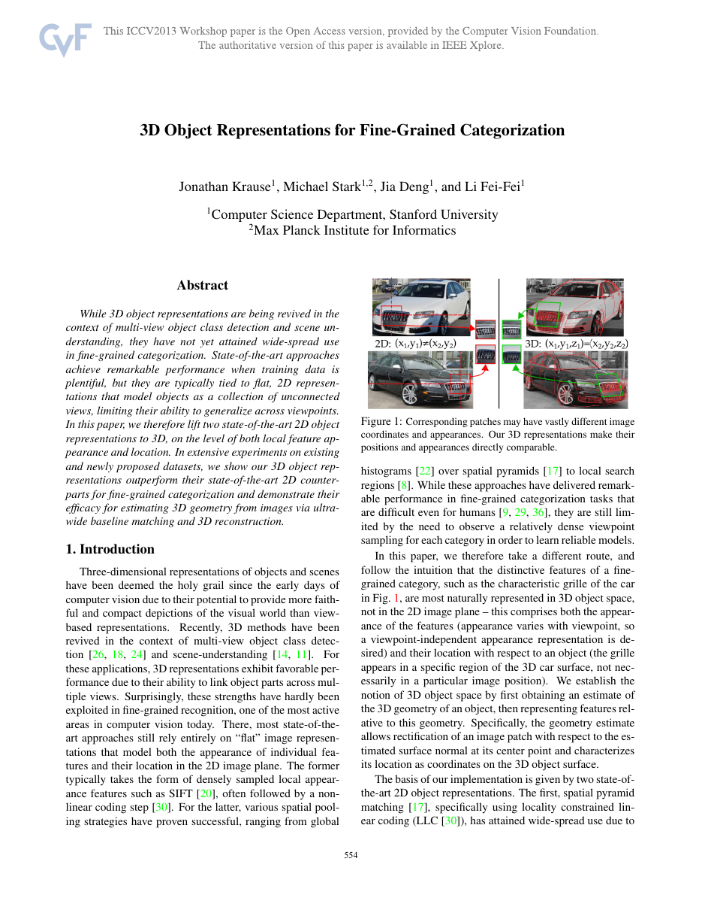

1. 论文基本信息
3D Object Representations for Fine-Grained Categorization
| Authors | Jonathan Krause, Michael Stark, Jia Deng, Li Fei-Fei |
| Affiliation | Stanford University / Max Planck Institute for Informatics |
| Year | 2013 |
| Venue | IEEE ICCV 2013 Workshop (3dRR-13), pp. 554-561 |
| DOI | 10.1109/ICCVW.2013.77 |
| Field | 细粒度视觉识别 / 3D计算机视觉 / 表示学习 |
| Local PDF | Krause et al. - 2013 - 3D object representations for fine-grained categorization.pdf |
1.1 TL;DR (一句话概述)
核心贡献：将两种最先进的2D细粒度表示（Spatial Pyramid Matching 和 BubbleBank）提升到3D对象坐标系，利用类别级3D CAD模型估计物体姿态，在3D空间中实现视角不变的特征提取和空间池化。论文同时发布了Stanford Cars数据集（196类，16,185张图片），3D表示在跨视角汽车型号识别上显著优于2D对应方法。
1.2 研究背景与动机
细粒度视觉识别要求区分同一基本类别下高度相似的子类别（如不同品牌型号的汽车）。传统2D方法的核心瓶颈在于：同一部件在不同视角下的图像坐标和外观发生剧烈变化，导致2D模板难以跨视角泛化。已有工作要么依赖大量标注部件（如鸟类关键点），要么将对象建模为互不连接的多个2D视图模板——这些方法本质上是"视角记忆"而非"结构理解"，对训练中未见的视角泛化能力极弱。
本文的基本洞见是：对刚性对象而言，判别性特征属于三维部件而非二维像素位置。如果能将2D表示提升到3D对象表面，则几何对齐可将视角变化从分类问题中分离出来。这项工作开创性地将3D几何引入细粒度识别流水线，成为后续一系列3D-aware细粒度方法的基石。
1.3 论文影响力
- 引用量超过 3,700+（截至2026年），是细粒度视觉领域的高被引论文
- 提出的 Stanford Cars 数据集 成为细粒度识别的标准基准之一
- 3D几何对齐的思想启发了后续的3D-aware CNN、多视图特征聚合等工作
- 被收录于Li Fei-Fei研究组的细粒度识别系列工作，与CVPR 2013 Fine-Grained Crowdsourcing等构成完整研究线
2. 核心洞见与创新点
2.1 核心洞见 (Core Insight Q&A)
Q: 为什么2D细粒度识别在视角变化时失效？
A: 2D表示中的"空间位置"编码的是图像坐标 $(u,v)$，而非对象表面坐标。同一汽车前灯在正视图位于 $(100,50)$，在侧视图可能位于 $(300,50)$，在俯视图甚至完全不可见。2D方法的特征空间随视角剧烈漂移，迫使模型要么记忆大量离散视角模板，要么接受显著的性能下降。
Q: 3D表示如何解决这个问题？
A: 将表示锚定在3D对象坐标系——即对象表面的几何位置。一旦估计出图像中物体的3D姿态，就可以将所有局部特征"向后投影"到3D CAD模型表面。不同视角拍摄的同一部件将映射到相同的3D表面位置，其外观和空间上下文在3D空间中具有几何一致性。这就是从"视角不变性"到"几何不变性"的范式转变。
Q: 关键设计为什么有效？
A: 3D表示的效力取决于三个关键设计：(1)用CAD模型的完整表面采样取代2D图像网格采样，确保特征空间在密集覆盖下仍保持几何一致性；(2)通过透视畸变校正将投影到2D图像的3D patch矫正为统一的参考矩形，消除投影形变引入的外观变异；(3)将空间池化定义在3D对象表面（方位角×仰角网格），而非2D图像平面，使得池化区域具有几何含义（如前脸区域、侧面区域）。
2.2 启发映射 (Inspiration Mapping)
| 启发来源 | 原始概念 | 本论文转化 |
|---|---|---|
| 2D SPM (Lazebnik et al. 2006) | 在2D图像空间构建金字塔网格，每个格内做词袋直方图池化 | 将池化空间从2D图像坐标替换为3D对象表面参数化坐标（方位角×仰角），构成3D空间金字塔 |
| 2D BubbleBank (Deng, Krause & Fei-Fei, CVPR 2013) | "气泡"作为可学习的局部特征模板，在2D图像搜索区域内检测并池化 | "气泡"绑定3D表面位置，池化区域改为3D邻域的球面邻域，实现位置感知的几何池化 |
| 多视图3D重建 | 从多视图2D图像恢复物体3D几何结构 | 利用合成渲染的CAD模型训练视角分类器，从单张2D图像估计物体3D姿态（方位角+仰角），无需真实多视图 |
| HOG特征 + SVM (经典检测范式) | 方向梯度直方图用于目标检测 | 用于训练1008个视角相关分类器（7类别×36方位×4仰角），作为姿态估计的前端 |
2.3 三个创新卡 (Novelty Cards)
创新卡 1: 3D空间金字塔匹配 (SPM-3D)
创新卡 2: 3D BubbleBank (BB-3D)
创新卡 3: 合成数据驱动的3D姿态估计流水线
2.4 创新级别评估
创新层级：架构创新 (Architectural Innovation)。本论文不是发明全新的视觉表示，而是将两种已有的2D表示通过几何重参数化移植到3D领域。这种"维度提升式创新"的价值在于：它系统性地证明了3D几何信息对细粒度视觉识别的重要性，为后续端到端3D-aware深度学习（如3D CNN on point clouds, Neural Radiance Fields for recognition）奠定了概念基础。
3. 系统架构
3.1 架构总览面板 (Architecture Overview Panel)
阶段1: 3D姿态估计 输入→假设
阶段2: 3D Patch提取 表面采样→矫正
阶段3: 3D表示构建 SPM-3D / BB-3D
阶段4: 分类 特征→类别
3.2 数据流流程图 (Mermaid Flowchart 1: 训练流水线)
41个汽车3D模型"] --> B["合成渲染
36方位×4仰角×10背景
= 59,040张合成图像"] B --> C["HOG特征提取
+视角标签"] C --> D["粗类别分组
7类别(sedan/SUV/coupe等)"] D --> E["训练视角分类器
1008个线性SVM
(7类×36方位×4仰角)"] A --> F["3D表面Patch采样
Dart throwing均匀采样
每模型数千个patch"] F --> G["Patch参数化
3D位置/法向量/上方向/支撑矩形"] H["训练图像
(带细粒度类别标签)"] --> I["姿态估计
Top-N假设"] E --> I G --> J["3D Patch投影+矫正
RootSIFT描述子提取"] I --> K["SPM-3D特征构建
3D空间金字塔池化"] J --> K I --> L["BB-3D特征构建
3D气泡匹配+池化"] J --> L K --> M["线性SVM训练
(一对多分类器)"] L --> M style A fill:#fff7ed,stroke:#fed7aa style E fill:#eff6ff,stroke:#bfdbfe style K fill:#f5f3ff,stroke:#ddd6fe style L fill:#ecfdf5,stroke:#bbf7d0 style M fill:#fef3c7,stroke:#f59e0b
3.3 推理流程图 (Mermaid Flowchart 2: 测试流水线)
(单张汽车图片)"] --> B["HOG特征提取"] B --> C["1008个视角分类器评分"] C --> D["Top-N姿态假设
(保留不确定性的多假设)"] D --> E["对每个假设:"] E --> F["3D Patch投影+矫正"] F --> G["RootSIFT描述子提取"] G --> H1["SPM-3D特征"] G --> H2["BB-3D特征"] H1 --> I["跨假设Max-Pooling"] H2 --> I I --> J["单分类器(3D)线性SVM"] J --> K["分类预测"] G --> L2["SPM(2D)特征池化"] G --> L3["BB(2D)特征构建"] L2 --> M["多方法特征拼接
SPM + BB + SPM-3D + BB-3D"] L3 --> M I --> M M --> N["融合分类器线性SVM"] N --> O["最终预测"] style A fill:#e8f0fe,stroke:#3b82f6 style D fill:#fef7ed,stroke:#f59e0b style I fill:#f0ebfd,stroke:#8b5cf6 style O fill:#e6f7ee,stroke:#10b981
4. 任务定义 (Task Definition)
4.1 输入定义
单张RGB图像 $\mathbf{I} \in \mathbb{R}^{H \times W \times 3}$，包含一个大致居中的主要对象（汽车）。
假设：(1) 对象属于刚性类别；(2) 存在可用的大致对应CAD模型（同类不同款亦可）；(3) 图像中存在足够纹理用于局部特征提取。
4.2 输出定义
细粒度类别标签 $c \in \{1, 2, ..., C\}$，其中 $C$ 取决于数据集：
- car-types: 8个粗粒度汽车类型
- BMW-10: 10个BMW车型（超细粒度，极难区分）
- Car-197 (Stanford Cars): 196个汽车制造商/型号/年份级别类别
同时隐式输出物体的3D姿态估计（作为中间表示）:
$$\hat{\theta} = (\text{azimuth}, \text{elevation}) \in [0, 2\pi) \times [-\pi/2, \pi/2]$$
4.3 核心假设与先决条件
| 假设 | 内容 | 合理性 |
|---|---|---|
| A1: 刚性对象 | 对象类别具有大致刚性结构，局部部件间的相对3D位置恒定 | 对汽车成立；对鸟/狗等可变形类别不成立 |
| A2: CAD可获性 | 存在覆盖目标类别大致形状的3D CAD模型（不要求精确匹配子类别） | 汽车CAD资源丰富；但对于稀有物种/工具等可能失效 |
| A3: 纹理充足 | 对象表面纹理足够支持局部特征提取和匹配 | 对涂装丰富的汽车成立；无纹理/纯色表面是挑战 |
| A4: 近似姿态 | 物体在图像中大致完整、未被严重遮挡 | 场景设置成立；严重遮挡下姿态估计失效 |
4.4 问题形式化 (Formalization)
给定训练集 $\mathcal{D} = \{(\mathbf{I}_i, c_i)\}_{i=1}^{N}$，学习分类函数 $f$:
$$f(\mathbf{I}) = \arg\max_{c} \ \mathbb{E}_{\theta \sim p(\theta|\mathbf{I})} \left[ \mathbf{w}_c^T \phi(\mathbf{I}, \theta) \right]$$
其中:
- $\theta$ 是物体3D姿态（方位角+仰角+粗类别）
- $p(\theta|\mathbf{I})$ 是视角分类器估计的姿态后验分布（近似为Top-N确定性假设）
- $\phi(\mathbf{I}, \theta)$ 是依赖于3D姿态的3D特征提取函数（SPM-3D或BB-3D）
- $\mathbf{w}_c$ 是类别 $c$ 的线性SVM权重
5. 关键挑战与先验方法分析
5.1 第一性原理分析 (First-Principles Decomposition)
细粒度识别困难的根本原因可从以下三个维度分解：
维度1: 类间差异极小化 (Inter-class Margin Collapse)
不同细粒度类别（如BMW 3系 vs BMW 5系）之间的外观差异远小于类内因视角、光照、背景引起的变异。在像素空间中，类间距离 $\|\mu_c - \mu_{c'}\|_2$ 趋近于零，而类内方差 $\sigma^2_{\text{intra}}$ （由视角变化主导）极大。这使得判别边界极易被视角噪声淹没。
维度2: 视角-外观纠缠 (Viewpoint-Appearance Entanglement)
图像中的特征同时编码了"是什么"(identity)和"从哪看"(viewpoint)。对于细粒度任务，$p(\text{feature}|\text{identity}, \text{viewpoint})$ 中，identity项的效应量极小。2D方法通过隐式记忆大量视角来解耦，本质上是在拟合 $p(\text{identity}|\text{feature}, \text{viewpoint} \in \text{training views})$——当测试视角超出训练分布时性能急剧下降。
维度3: 部件定位的几何歧义 (Geometric Ambiguity in Part Localization)
细粒度判别依赖局部部件（前灯、格栅、后视镜等）。在2D图像中，部件的图像位置随视角发生非线性变化——透视投影将3D刚性运动映射为2D非刚性变形。部件检测器要么需要密集覆盖所有视角（训练成本高），要么泛化到未见过视角时出现严重定位错误。
5.2 先验方法比较表
| 方法类别 | 代表工作 | 核心机制 | 视角泛化 | 监督需求 | 3D信息利用 |
|---|---|---|---|---|---|
| 2D Bag-of-Words | SPM (Lazebnik 2006) | 2D空间金字塔+词袋直方图 | 弱（依赖密集多视角模板） | 仅类别标签 | 无 |
| 可变形部件模型 | DPM (Felzenszwalb 2010), structDPM | 根滤波器+部件滤波器的星形模型 | 中等（部件间几何约束） | 边界框+部件标注 | 无（2D弹簧约束） |
| BubbleBank | BB (Deng, Krause & Fei-Fei 2013) | 可学习局部模板+2D搜索池化 | 中等偏弱 | 类别标签 | 无 |
| 多视图DPM | mvDPM | 多视图组件DPM | 中等（每个视角独立组件） | 视角+部件标注 | 隐式（多视角离散覆盖） |
| 3D SPM (本文) | Krause et al. 2013 | 3D对象坐标系+空间金字塔池化 | 强（3D几何对齐） | 类别标签+姿态估计器（合成数据训练） | 全（3D CAD+姿态） |
| 3D BubbleBank (本文) | Krause et al. 2013 | 3D位置绑定气泡+3D邻域池化 | 强（3D几何对齐+大池化区域容错） | 类别标签+姿态估计器 | 全（3D CAD+姿态） |
5.3 关键挑战总结
| # | 挑战 | 为什么难 | 本文如何应对 |
|---|---|---|---|
| C1 | 跨视角部件匹配 | 同一部件在不同视角下图像位置和外观剧烈变化，2D局部特征描述子引入显著变异 | 投影矫正消除透视畸变；3D坐标绑定提供几何对应 |
| C2 | 3D姿态估计 | 从单张2D图像精确恢复物体3D姿态是病态问题，尤其当CAD模型与实例不完全匹配时 | 合成渲染数据训练专用视角分类器；Top-N多假设+max-pooling吸收不确定性 |
| C3 | CAD模型覆盖不足 | 41个CAD模型无法覆盖所有细粒度类别的形状差异（如皮卡vs轿车） | 粗类别分组共享CAD，利用特征学习的判别能力弥补几何近似的误差 |
| C4 | 计算复杂性 | 3D patch投影、矫正、多假设前向传播带来显著计算开销 | 预处理patch位置，在线仅做投影+描述子提取；气泡随机采样控制维度 |
6. 方法详解与公式推导
6.1 公式组1: 3D姿态估计
对于每个粗类别 $g \in \{1,...,7\}$ 和离散视角 $(\phi_a, \phi_e)$（方位角a、仰角e）:
$$s(g, \phi_a, \phi_e; \mathbf{I}) = \mathbf{w}_{g,\phi_a,\phi_e}^T \cdot \text{HOG}(\mathbf{I}) + b_{g,\phi_a,\phi_e}$$
其中 HOG特征维度为 $d_{\text{HOG}}$，$\mathbf{w} \in \mathbb{R}^{d_{\text{HOG}}}$ 为线性SVM权重。
$$\Theta_N(\mathbf{I}) = \left\{ \theta_{(1)}, \theta_{(2)}, ..., \theta_{(N)} \right\} = \underset{\theta \in \Theta}{\text{Top-}N} \ s(g(\theta), \phi_a, \phi_e; \mathbf{I})$$
其中 $\Theta$ 为所有1008个离散姿态，$g(\theta)$ 为姿态对应的粗类别。
6.2 公式组2: 3D Patch投影与矫正
给定3D patch中心 $\mathbf{p}_{\text{3D}} \in \mathbb{R}^3$（在对象坐标系中）和姿态 $\theta = (R, \mathbf{t}, s)$:
$$\mathbf{p}_{\text{2D}} = \pi\left( K \cdot (sR \cdot \mathbf{p}_{\text{3D}} + \mathbf{t}) \right)$$
其中 $R \in SO(3)$ 为旋转矩阵（由方位角和仰角定义），$\mathbf{t} \in \mathbb{R}^3$ 为平移，$s$ 为尺度，$K$ 为相机内参，$\pi$ 为齐次归一化投影。
对每个投影后的patch四边形 $Q_i$，计算单应性矩阵 $H_i$ 将其矫正到固定尺寸 $W_p \times H_p$ 的参考矩形:
$$\mathbf{d}_i = \text{RootSIFT}\left( \text{warp}( \mathbf{I}, H_i, W_p, H_p ) \right)$$
RootSIFT: 对SIFT描述子做L1归一化后逐元素开方: $\mathbf{d}_{\text{root}} = \sqrt{\mathbf{d}_{\text{L1-norm}}}$
6.3 公式组3: SPM-3D特征构建
将对象表面参数化为 $S = [0, 2\pi) \times [-\pi/2, \pi/2]$（方位角×仰角）。金字塔层级 $l \in \{0, 1, 2\}$，每层将S划分为 $2^l \times 2^l$ 个等面积网格（实际中方位角做等角度划分，仰角按 $\sin$ 等间隔划分保证等面积）。
层级0: 1×1=1个bin，层级1: 2×2=4个bins，层级2: 4×4=16个bins，总计 $1+4+16=21$ 个3D空间bin。
对于姿态假设 $\theta$，SPM-3D特征为所有21个bin的量化描述子直方图的串联:
$$\phi_{\text{SPM-3D}}(\mathbf{I}, \theta) = \bigoplus_{l=0}^{2} \bigoplus_{b=1}^{4^l} \mathbf{h}_{l,b}(\mathbf{I}, \theta)$$
其中 $\mathbf{h}_{l,b} \in \mathbb{R}^{K}$ 为码本尺寸 $K$ 的直方图:
$$\mathbf{h}_{l,b}^{(k)} = \sum_{i: \mathbf{p}_{\text{3D}}^{(i)} \in \text{bin}(l,b)} \mathbf{1}\left[ q(\mathbf{d}_i) = k \right]$$
$q(\cdot)$ 为描述子到码本的量化函数（最近邻分配）。
6.4 公式组4: BB-3D特征构建
设有 $M$ 个气泡，每个气泡 $j$ 由描述子模板 $\mathbf{b}_j$ 和3D位置 $\mathbf{p}_{\text{3D}}^{(j)}$ 定义。气泡 $j$ 在姿态 $\theta$ 下的响应为:
$$r_j(\mathbf{I}, \theta) = \max_{i: \|\mathbf{p}_{\text{3D}}^{(i)} - \mathbf{p}_{\text{3D}}^{(j)}\|_2 \leq \delta} \text{sim}(\mathbf{d}_i, \mathbf{b}_j)$$
BB-3D特征为所有气泡响应的串联:
$$\phi_{\text{BB-3D}}(\mathbf{I}, \theta) = [r_1, r_2, ..., r_M]^T$$
其中 $\delta$ 为3D搜索半径，$\text{sim}(\cdot, \cdot)$ 为描述子相似度（如点积或负欧氏距离）。
6.5 参数汇总表
| 参数 | 符号 | 值/范围 | 含义 |
|---|---|---|---|
| CAD模型数 | $N_{\text{CAD}}$ | 41 | 用于合成渲染和3D表面采样的汽车CAD模型 |
| 粗类别数 | $G$ | 7 | sedan, SUV, coupe, convertible, pickup, hatchback, station wagon |
| 方位角离散数 | $N_a$ | 36 | 每10度一个方位角 |
| 仰角离散数 | $N_e$ | 4 | 覆盖典型观察仰角 |
| 合成图像数 | $N_{\text{syn}}$ | 59,040 | 41×36×4×10背景 |
| 视角分类器数 | $N_{\text{clf}}$ | 1,008 | 7×36×4 HOG+SVM |
| SPM金字塔层数 | $L$ | 3 (l=0,1,2) | 1×1+2×2+4×4=21个3D空间bin |
| 3D表面patch数 | $N_p$ | ~数千/模型 | Dart throwing采样密度 |
| 码本尺寸 | $K$ | ~数百到数千 | RootSIFT聚类中心数 |
| BB-3D气泡数 | $M$ | ~数千 | 随机采样自训练集 |
| 3D搜索半径 | $\delta$ | ~0.2-0.5m（对象尺度归一化） | 气泡的3D邻域半径 |
| Top-N假设数 | $N$ | ~5-10 | 保留的姿态假设数量 |
7. 深层原理与机制分析
7.1 深度机制解释 (Deep Mechanistic Reading)
基本原理: 几何不变性优于视觉不变性
深度学习时代的主流思路是通过海量数据和数据增强训练神经网络隐式学习视角不变性。本文采取的路线完全不同：显式地将3D几何注入表示空间，使不变性成为表示的归纳偏置，而非学习的经验结果。这相当于在特征空间中"除以"视角变换群 $SE(3)$ 的作用——不同视角下同一部件的3D坐标是相同的（在对象坐标系中），因此3D池化天然具有 $SE(3)$-不变性。
数学上，2D图像形成 $I = \text{render}(M, \theta, L)$，其中 $M$ 为3D模型，$\theta$ 为视角，$L$ 为光照。直接对 $I$ 分类需要解耦 $\theta$ 和 $M$ 的身份信息。本文通过估计 $\theta$ 并在3D坐标系中操作，有效地执行了"逆渲染"(inverse rendering)——将像素重新映射回对象表面，在表面空间中进行判别分析。
SPM-3D vs BB-3D: 两种3D池化范式的对比
SPM-3D（结构化池化）: 将3D表面按预设的方位角×仰角网格分区，每个区域独立做直方图统计。优势在于区域具有明确的几何含义（如前脸、侧面、后部），特征可解释性强。缺点在于网格边界是硬性的——恰好落在边界附近的patch可能被分配到"错误"的bin。
BB-3D（分布式池化）: 通过大量随机散布的3D气泡定义重叠的感兴趣区域。优势在于软边界——气泡通过连续相似度加权而非硬分配，且大量气泡的冗余表示提供了平滑的特征空间。缺点在于特征维度高且可解释性弱。
这种"结构化vs分布式"的对偶设计使两种方法在信息编码上具有互补性，解释了为什么两者融合后性能提升显著。
7.2 方法比较行 (cmp-row)
SPM-3D
- 池化方式: 硬网格分区 + 直方图
- 空间分辨率: 21个预定义3D区域
- 特征类型: 量化码本直方图
- 可解释性: 高（每个bin有明确几何含义）
- 参数效率: 高（特征维度=21×K）
- 对姿态误差敏感性: 中等偏高（硬边界导致错位）
- 计算开销: 较低（仅需直方图统计）
- 适合场景: 已知大致姿态、部件分布均匀的对象
BB-3D
- 池化方式: 3D邻域max-pooling
- 空间分辨率: 数千个重叠3D邻域
- 特征类型: 连续相似度响应值
- 可解释性: 低（气泡无明确语义）
- 参数效率: 低（特征维度=M=~数千）
- 对姿态误差敏感性: 低（大邻域容错）
- 计算开销: 较高（M×N_p次相似度计算）
- 适合场景: 姿态估计噪声大、需要冗余表示的场景
融合策略
- 特征级联: 将SPM-3D和BB-3D（以及2D SPM和2D BB）的特征向量直接拼接
- 互补性来源: 结构化池化捕捉全局几何分布；分布式池化捕捉局部判别性纹理
- 2D+3D多粒度: 2D特征提供视图特定的判别信息（如某特殊涂装），3D特征提供视角不变的几何信息
- 融合后性能: Car-197上四方法堆叠达到75.5%——相比单方法最高69.5%提升6个百分点
7.3 泛化机制原理
3D表示提供泛化能力的根本机制可以分解为三个层面：
- 外观归一化 (Appearance Normalization): 透视矫正将不同视角下同一3D patch的畸变外观映射到统一参考框架，使后续描述子提取对外观视角变异具有不变性。
- 位置归一化 (Position Normalization): 3D坐标绑定使特征的空间位置由对象几何而非成像几何定义，消除了成像过程中视角对空间位置的调制。
- 尺度归一化 (Scale Normalization): CAD模型提供绝对尺度参考，3D邻域的物理尺寸（如0.3m）映射到图像上随距离自适应调整。
这三重归一化构成一个3D解耦流水线：视角变化的影响在特征提取阶段被逐层剥离，使得分类器面对的表示空间仅保留身份相关的变异。
8. 图像解读与实验证据
8.1 Fig.1 — 3D表示动机示意图

Image: Overview figure showing 2D vs 3D part correspondence across viewpoints核心信息: 左图展示同一汽车部件（如前灯）在不同视角拍摄的图像中，其2D图像坐标和外观发生剧烈变化——前灯在正视图位于底部中心，在侧视图中可能移至图像边缘或完全不可见。右图展示在3D对象坐标系中，同一部件的3D表面位置固定不变，所有视角下的外观变化源于透视投影而非部件本身的结构变化。
关键洞察: 这张图将论文的哲学核心可视化：细粒度识别的困难不是"部件长什么样"的问题，而是"部件在哪里"的问题。一旦在3D空间中定位了部件，其外观可以在几何一致的条件下进行比较。这区别于深度学习方法隐式学习视角不变性的范式——本文选择显式估计并消除视角效应。